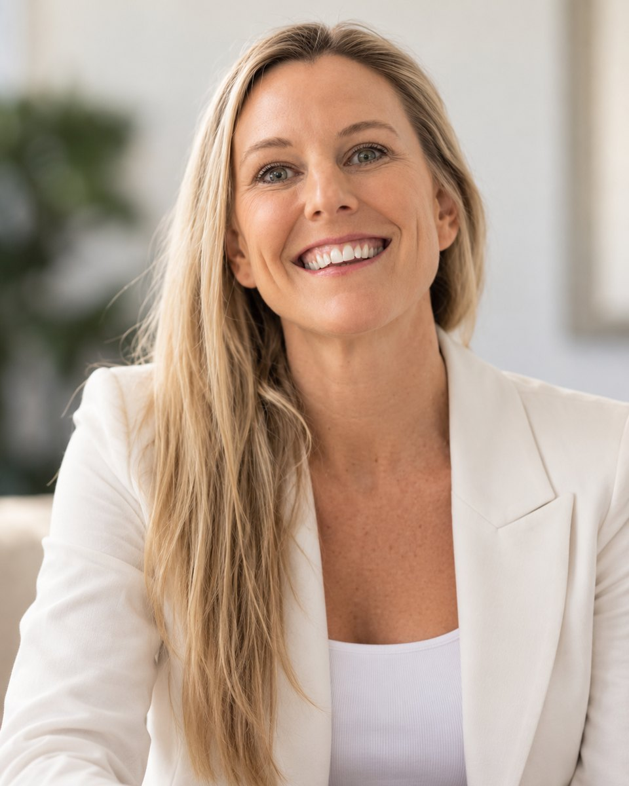

Business Consultant · Former COO · Mentor · Writer
Turning complexity into clarity. And clarity into action.
I work with business owners and leadership teams to bring clarity to complex challenges, strengthen operations and turn ideas into meaningful results. Alongside consulting, I offer mentoring and writing grounded in the same belief: that thoughtful conversations can create real change.
Based on the Gold Coast, Australia. Working globally.

About me
A different perspective grounded in a practical approach.
With over 20 years in international operations, executive leadership, business transformation and entrepreneurship, I help businesses improve performance and navigate change.
I’ve scaled businesses, managed global operations and led major transformations across industries, continents and organisations of all sizes. I’m as comfortable developing a strategy as I am implementing it.
I’ve always been curious about people: what motivates us, how we connect and what we’re capable of achieving. That curiosity is the common thread in my work.
I don’t believe in simply making recommendations. I believe in making things happen.
20+
Years of experience
40+
Direct reports across continents
$35 million+
Budgets managed
Business consulting · Fractional COO
Clear thinking. Practical solutions. Meaningful results.
Businesses bring me in when they need experienced leadership, structure, accountability and someone who will actually get things done.
As a consultant or fractional COO, I improve operations, strengthen leadership and build the foundations for sustainable growth, bringing international executive leadership experience to every engagement.
Understand the business. Focus on what matters. Make it work.
Start a conversationIt takes someone pretty special to understand a business and its people, work out what needs to improve and then get buy-in across the board.
Mentoring & accountability
Sometimes you need someone in your corner.
When you’re close to a situation, an independent perspective can make all the difference. Two decades of leading teams across continents, building businesses of my own and serving on foundation boards have taught me what helps people move forward. I offer practical mentoring grounded in real-world experience, asking the right questions and pairing honest conversation with accountability.
Clarity creates confidence. Action creates progress.
Writing · Memoirs & biographies
Your story, in your own voice.
Writing has been my passion all my life, and I wrote my first life story, my grandmother’s, at just 16. Today, I help people bring their stories to life through memoirs, biographies and personal storytelling, approaching each one with curiosity, empathy and respect for the trust involved.
Because everyone has a story and every story deserves to be told.
Approach
Shaped around what you need.
Business consulting
From focused projects and operational reviews to ongoing advisory and fractional COO engagements, I work in the capacity the business needs. I take the time to understand the business, its people, its challenges and goals, then implement improvements that deliver results.
Who I work best withFounders, business owners and leadership teams who are growing, navigating change or have outgrown their existing systems, structures or ways of working.
Mentoring & accountability
One-on-one mentoring and accountability, tailored to your unique situation. Sessions are online or in person by arrangement, focused on clarity, confidence, decision-making and turning intentions into action.
Who I work best withBusiness owners, emerging leaders and individuals navigating transitions, new responsibilities or personal ambitions who would value an experienced sounding board.
Writing
Every story starts with a conversation. Through interviews, research and collaborative drafting, I work closely with you to capture the story you want to tell in an authentic voice.
Who I work best withIndividuals and families wanting to preserve personal experiences, family histories or life stories for future generations.
Whatever the work, the first step is the same: a complimentary 20-minute introductory conversation. Start a conversation →
Professional experience
Experience across industries and borders.
My career spans international corporations, executive leadership, entrepreneurship and the not-for-profit sector.
Australia · UK · USA · Asia · Europe · UAE · Africa
Regions
Roles I’ve held
- Global Head of Operations
- Chief Operating Officer
- Chief Executive Officer / Co-Founder
- Founder
- Operations Manager, UK, UAE & Africa
- Group Marketing Operations Manager
Giving back
Giving back matters to me and has always been part of my story. My longstanding international volunteering ranges from cooking in homeless shelters to foundation board roles, including co-founding the BRAUS Foundation and currently serving on the board of the First Choice Foundation.
Testimonials
What people say
Lauren got across our business quickly and saw where we needed more structure. She’s helped us clarify responsibilities and put processes in place that support the team as we grow. She gets involved and follows through.
Lauren is practical and thoughtful. She helped me untangle things, identify what was holding me back, and then held me accountable for making the changes I needed to get where I wanted to go. An honest challenger who is genuinely supportive.
Lauren took a collection of memories, half-formed ideas and important details and shaped them into a story that felt completely true to the person telling it, me! She knew when to ask another question, when to leave something alone and how to bring out the meaning behind the facts. The finished piece was warm, clear and personal without feeling overworked. It sounded like me, only more articulate.
Questions
Frequently asked.
Do you work with clients outside the Gold Coast?
Yes. I’m based on the Gold Coast and work with clients locally, across Australia and internationally. Depending on the engagement, we can work remotely or in person.
Do you offer one-off projects or ongoing support?
Both. Some clients need help with a specific challenge or project, while others benefit from ongoing operational leadership, advisory or mentoring support. The approach depends on what we’re trying to achieve.
How much do your services cost?
Every engagement is different. Following an initial conversation, I’ll recommend an approach and provide a clear proposal or quote based on the scope of work.
How do you manage confidentiality?
Discretion and trust are fundamental to my work. Whether I’m working within a business, supporting an individual or helping someone tell their personal story, I treat information and conversations with care and confidentiality. Formal confidentiality agreements can be arranged where appropriate.
Contact
Let’s start a conversation.
Whether you’re looking to strengthen your business, explore an idea, share a story or navigate a new direction, I’d welcome the opportunity to connect.
Sometimes the most valuable first step is simply a conversation.
Lauren McGilp
Gold Coast, Queensland, Australia
Working across Australia and internationally.
- Phone
- 0488 544 131
- lauren-mcgilp